| 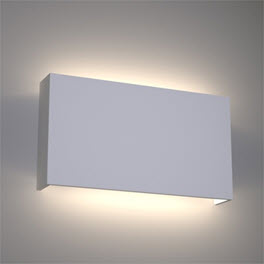 | 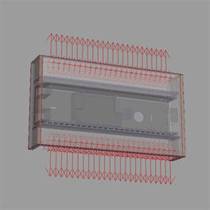 |
本教程介绍如何准确地复制一家灯具公司的一款真实灯具（使用光度学灯光）。这款特定的灯具由顶部和底部 LED 板中的 24 个点光源 (14w LED) 组成。
要下载对应的场景文件和 IES 文件，请单击此处。请注意，您必须为每个光度学灯光打开 IES 文件。
可以使用光度学灯光查看器（例如 http://www.visual-3d.com 上提供的查看器）来查看上面链接中提供的 IES 文件。它会以图表的形式显示 IES 文件，使之更易于理解：
| 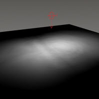 | 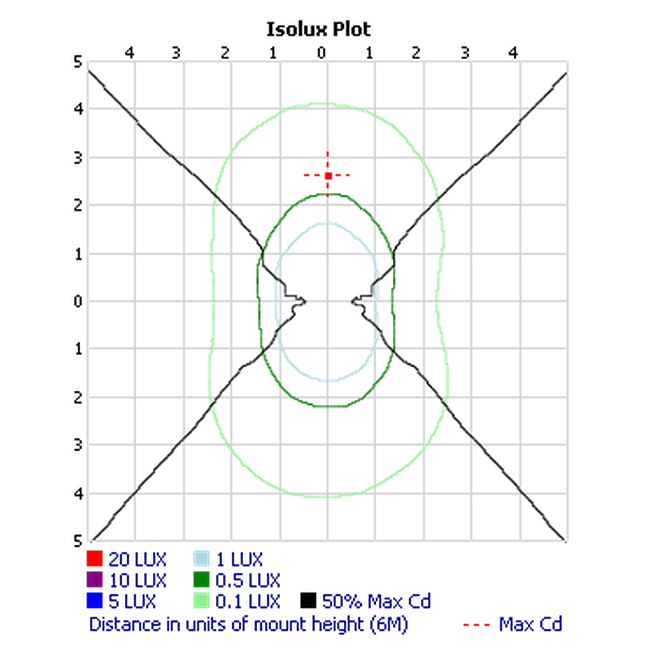 |
| 使用 MtoaA 渲染 IES 灯光剖面（左）以及使用光度学灯光查看器查看 IES 文件（右）。 |
| 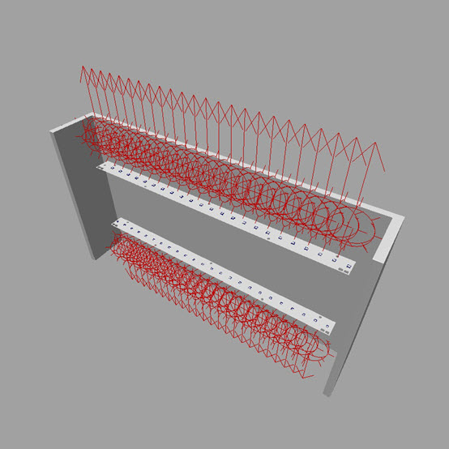 |
| 每行 24 个光度学灯光 |
灯具颜色的一个方面是它的颜色外观，也就是它的灯光看起来是“暖色调”还是“冷色调”，这是通过相关色温 (CCT) 来衡量的。暖色调灯具的 CCT 为 2700-3000 K，通常视为更适合家用。4000 K 或更高 CCT 的灯具会被视为“冷色调”，更适合于办公室和某些零售应用。这款特定灯具的色温按灯具制造商所标注为 4500 K。
| 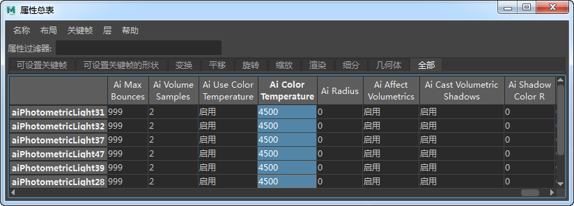 |
我们可以通过光源来更改灯光的曝光。但是，如果场景渲染为 32 位 EXR 图像，使用后期处理软件调整曝光会更简单。
| 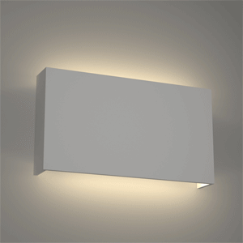 |
| 在后期处理软件中修改灯光的曝光 |
通过对图像进行色调映射，可以进一步减少墙上过度曝光的区域。此举也有助于减少墙上明亮区域中的噪波。
| 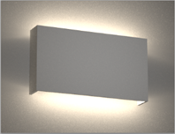 | 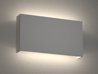 |
| 色调映射之前 | 色调映射之后 |
减少光度学灯光的间接照明量是减轻噪波、缩短渲染时间的一种方法。但是，如下图所示，这样做会减少场景中的反弹光，从而导致丢失一些细微的细节。
| 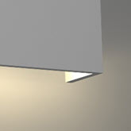 | 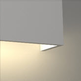 |
| 间接(Indirect)：0 | 间接(Indirect)：1 |
光度学灯光距离灯具和墙体都非常近，可以看到在明亮区域中存在一些噪波。增加光度学灯光的采样数并不能减少噪波。增加 GI 漫反射采样数可以减少噪波，但会增加渲染时间。
| 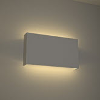 | 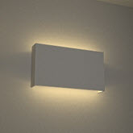 |
| 4 | 2 |
有关对光度学灯光使用 IES 文件的教程到此结束。您还可以尝试使用其他灯具制造商（例如 Erco、Lamp、Osram 和 Philips）的 IES 文件进行测试。
| 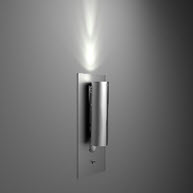 |
| 更多示例 |
非常感谢 Astro Lighting 提供 IES 文件和 RIO 灯光模型。